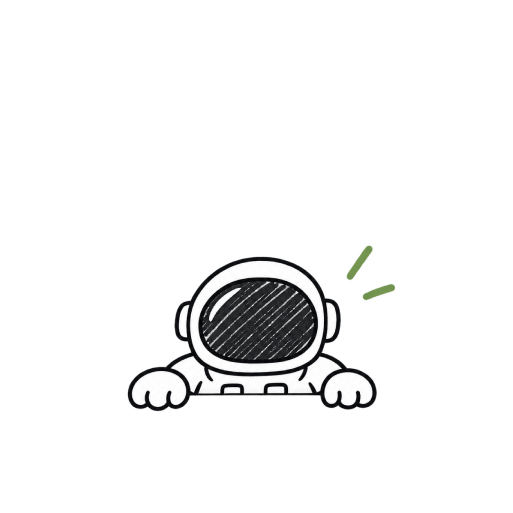

Window Search Box
A new ways of interacting with your computer
HELLO, I’M TIN
Designing for a kinder, clearer web.
I’m a product designer focused on simple, useful and human experiences.
Explore the world of design with me
Currently Senior Product designer at Microsoft. I make complex products feel intuitive, useful, and a little delightful. Crafting thoughtful experiences for people and businesses.
Select work

A new ways of interacting with your computer